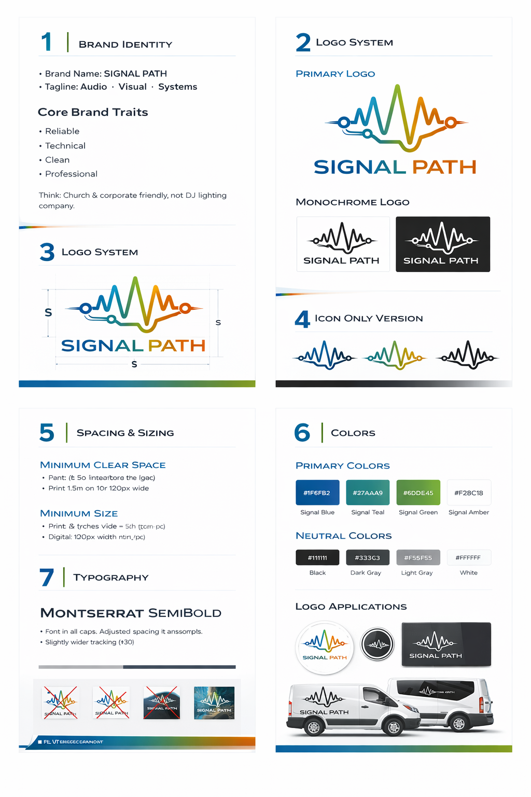

Sound Design + Media Production at CU Boulder
James is a Sound Design Media Production major with a passion for immersive audio, visual storytelling, and custom AV experiences.
About James
James Smith is a dedicated audio/video specialist studying Sound Design Media Production at CU Boulder. His coursework and practical experience combine sound theory, production, post-production, and system design to create polished media for both creative storytelling and commercial applications.
He brings hands-on experience working on campus AV installations, student film projects, podcasts, and live event production. James is driven by the details that make sound feel alive, from clean mixes and perfect room acoustics to engaging visuals and reliable playback systems.
Experience & Passion
James loves collaborating with creators, entrepreneurs, and event teams to turn ideas into memorable experiences. He approaches every project with a balance of technical expertise, creative problem solving, and a focus on delivering clear, powerful results.
- Audio editing and mixing for podcasts, music, and video
- Video production and motion editing for campus media
- Designing and testing AV systems for studios and event spaces
Current Projects
James is currently working on:
- A student documentary series highlighting Colorado creatives
- A podcast production workflow for local entrepreneurs
- Custom AV integration plans for small studios and collaborative spaces
Learn more about his work and creative projects at jamesotron2000.com.
Brand System
Signal Path uses a professional identity built from a clean blue, teal, green, and amber palette with strong typography and clear visual spacing.
